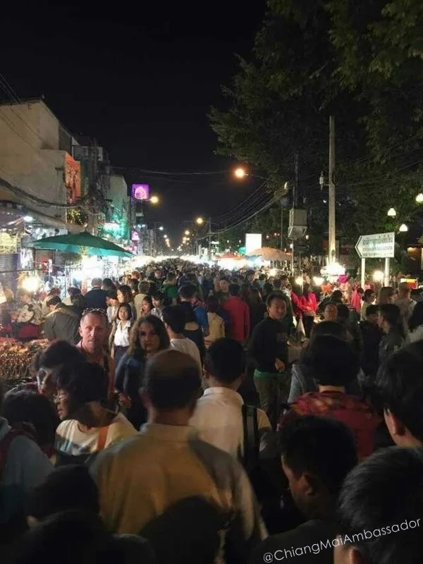

Two of the best things to do in Chiang Mai happen on weekends. The Saturday Walking Street on Wualai Road and the Sunday Walking Street on Ratchadamnoen Road are among the most genuine market experiences you will find in northern Thailand. These are not the Night Bazaar. There are no neon signs, no western fast food chains, no rows of identical phone cases. These are craft markets run by Thai vendors selling things they actually made.
Both markets run from 5pm to 11pm. Both close off the main road to vehicle traffic. Both draw large crowds. But they are different experiences with different strengths, and if you are in Chiang Mai for a weekend you should do both.
Saturday Walking Street: Wualai Road
Wualai Road has been the silversmith district of Chiang Mai for generations. On Saturday evenings the road shuts to traffic and the silver workshops open their fronts to the street. You can watch craftsmen working at benches, hammering designs into bowls, cups, bracelets, rings, and decorative wall pieces. It is not a performance. These are working silversmiths who happen to be working in plain view.
The market runs the length of Wualai Road from the Chiang Mai Gate intersection south toward Wualai Temple. There are stalls selling silverwork, lacquerware, woven textiles, carved items, clothing, and northern Thai food. It is less crowded than the Sunday market, which makes it easier to browse without being pushed along by the crowd.
Multiple silver shops line the road, so do not buy from the first stall you see. Walk the full length first, note the prices and quality across different vendors, then go back to the ones that stood out. This single habit will save you money and get you better pieces. Silver quality varies. Ask whether you are looking at solid silver or silver plate. Reputable vendors will tell you straight.
Food and drink vendors are scattered throughout the market. Small restaurants just off the main road are good places to sit down, rest your feet, and watch the crowd. The Saturday market is quieter and more neighbourhood-focused than Sunday. If you prefer a calmer experience, this is the one to prioritise.
Sunday Walking Street: Ratchadamnoen Road
The Sunday market is larger, louder, and more central. It starts at Thapae Gate on the east side of the Old City moat and runs west along Ratchadamnoen Road to the city police station, roughly six blocks. About halfway along, it branches south down Prapokklao Road past Wat Chedi Luang for another block.
A stage is set up at the south end of Prapokklao Road. From around 7pm, northern Thai musicians and traditional dancers in Lanna costume perform live. The Three Kings Monument and the old Provincial Hall (now the Chiang Mai City Museum) mark the northern end of the market. The whole area becomes a slow-moving river of people after 7pm.
Ratchadamnoen Road passes temple after temple. The temple grounds are where the majority of the food stalls are set up, with tables and chairs under the trees. You will find grilled items, papaya salad, soups, northern Thai sausages, desserts, fresh fruit, and dishes you may not recognise at all. Soft traditional music plays on the temple sound systems. It is worth slowing down here. The food court sections of the Sunday market are some of the best eating in Chiang Mai at any price.

What to Buy
Both walking streets carry genuinely handmade goods. This is the main difference from the Night Bazaar. You will find carved wooden items, painted silk, hand-embroidered textiles, silverwork, lacquerware, ceramics, handmade soaps, herbal products, traditional bags and scarves, paintings, and clothing made from northern Thai fabrics.
Prices to expect as a rough guide (as of 2026):
- Carved soap: 80-120 THB
- Wooden carved products: 100 THB and up depending on size
- T-shirts: 150 THB (quality varies)
- Polo shirts: around 200 THB
- Hill tribe woven bags: 150-400 THB depending on size
- Silverwork: 200 THB for simple pieces, much higher for detailed work
How to Bargain
Bargaining is expected at both markets. This is not rude. It is part of the system. Vendors price expecting it. That said, the walking streets have less markup built in than the Night Bazaar, so the gap between starting price and fair price is smaller.
Start at 30-40% of the first offer. Work up slowly. The vendor will come down. You meet somewhere in the middle. For smaller items under 200 THB, the negotiation is short. For larger purchases, take your time. If you are buying multiple items from the same vendor, ask for a total price rather than item by item. You will almost always get a better deal.
Vendors will not sell at a loss. Do not push for a price so low it is insulting. The craft people at these markets are skilled artisans, not factory outlets. A fair price for both sides is the goal.
Massage While You Rest
Both markets have foot massage operators set up along the sides of the road with reclining chairs. This is one of the best uses of time at the Sunday market. Get your snack and cold drink, find a chair, and sit for an hour while the market moves past you. Massages at walking street markets are under 200 THB per hour and often closer to 150 THB. The standard of work varies but it is consistently decent for the price.
Getting There
For the Sunday market on Ratchadamnoen Road, the easiest approach is to walk in through Thapae Gate from the east moat side. Songthaew, Grab, or Maxim will all get you to Thapae Gate easily. The 30 THB songthaew flat rate applies for travel within the city.
For Wualai Road on Saturday, ride south from Chiang Mai Gate. Parking on the road itself is impossible once the market starts. Drop off near Chiang Mai Gate and walk south, or take a songthaew directly to Wualai Road.
Crowds peak between 7pm and 9pm at both markets. Arriving at 5pm gives you the best conditions for browsing: full stall selection, less pressure, cooler temperature, and easier movement. By 9pm on a busy Saturday or Sunday it can be difficult to walk at normal pace along the main road.
Key Takeaways
Two walking street markets: Wualai Road on Saturday (silver district, more relaxed) and Ratchadamnoen Road on Sunday (larger, more food, live music). Both run 5pm-11pm. Entry free. Cash only at most vendors. Bargain at 30-40% of first offer and work up. Arrive at 5pm for best experience. Get a foot massage in a reclining street chair while you rest. These markets are for handmade local goods, not the Night Bazaar's tourist merchandise.
Frequently Asked Questions
What days are the Chiang Mai walking street markets?
Saturday night on Wualai Road and Sunday night on Ratchadamnoen Road. Both run from 5pm to 11pm. The Night Bazaar is a separate permanent market that runs every night east of the Old City.
Is entry to the walking street markets free?
Yes. Free entry. Bring cash for buying food and goods. Most vendors do not accept cards or QR payments. Small notes (20 and 50 THB) make transactions easier.
What is the difference between Saturday and Sunday markets?
Saturday (Wualai) focuses on silverwork and is quieter and more neighbourhood-oriented. Sunday (Ratchadamnoen) is larger, has more food stalls on temple grounds, live traditional music, and draws bigger crowds. Sunday is the one most first-time visitors prioritise.
Can you bargain at the Chiang Mai walking street markets?
Yes. Start at 30-40% of the vendor's first price and work up. Buying multiple items from one vendor usually gets you a better total price. The walking streets have less markup than the Night Bazaar, so the discount from asking price is smaller.
When is the best time to arrive at the walking street markets?
5pm to 6pm. Full selection of stalls, cooler temperature, and easy movement before the crowds build. By 8-9pm the main road can be very slow-moving. The Sunday market in particular gets congested after 7pm.
Are the walking street markets good for food?
The Sunday market on Ratchadamnoen Road has excellent food at the temple ground stalls. Northern Thai dishes, grilled items, soups, papaya salad, and desserts. The food at the Sunday market is some of the cheapest and most authentic eating in Chiang Mai.
Guru Tip
Walk the full length of both the Saturday and Sunday markets before buying anything. The stalls in the first 100 metres from the entry point are the most tourist-facing and price accordingly. Deeper into the market, prices drop and quality often improves. At the Sunday market, the best food stalls are on the temple grounds partway along the route, not at the entrance. Walk past the tourist art sellers and into the temple courtyards.